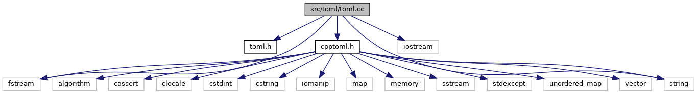
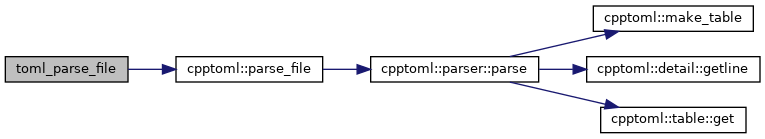

Include dependency graph for toml.cc:

Classes | |
| struct | TOMLWrapper |
Macros | |
| #define | TOML_GET_TYPE(T) |
Functions | |
| TOMLWrapper * | toml_parse_file (const char *filename) |
| bool | toml_contains (TOMLWrapper &wrapper, const char *key) |
| bool | toml_get_string (TOMLWrapper *wrapper, const char *key, char **value, int *length) |
| void | toml_string_delete (char *string) |
Macro Definition Documentation
◆ TOML_GET_TYPE
| #define TOML_GET_TYPE | ( | T | ) |
Value:
bool toml_get_##T( \
) { \
auto option = table.get_qualified_as<T>(key); \
if(option) { \
value = *option; \
} \
return bool(option); \
}
Definition: toml.cc:10
Function Documentation
◆ toml_contains()
| bool toml_contains | ( | TOMLWrapper & | wrapper, |
| const char * | key | ||
| ) |
Here is the call graph for this function:
◆ toml_get_string()
| bool toml_get_string | ( | TOMLWrapper * | wrapper, |
| const char * | key, | ||
| char ** | value, | ||
| int * | length | ||
| ) |
Here is the call graph for this function:

◆ toml_parse_file()
| TOMLWrapper* toml_parse_file | ( | const char * | filename | ) |
Here is the call graph for this function:

◆ toml_string_delete()
| void toml_string_delete | ( | char * | string | ) |